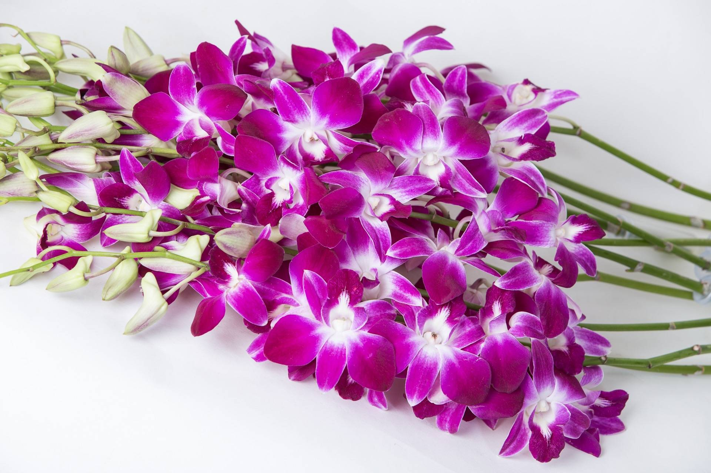
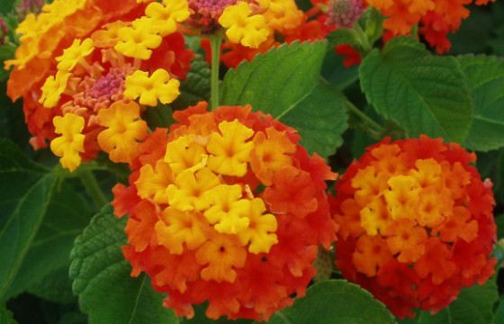
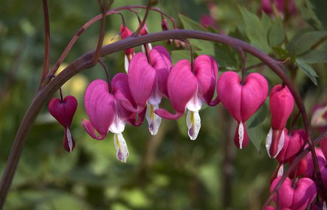
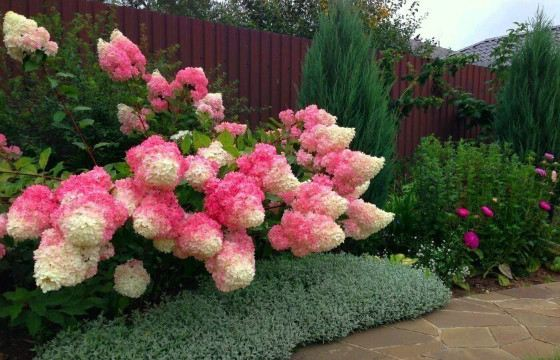
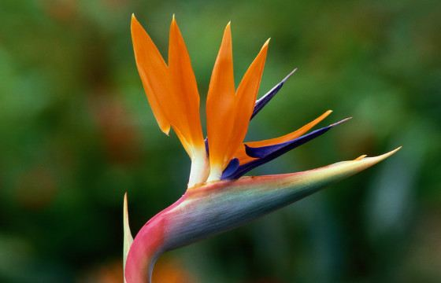
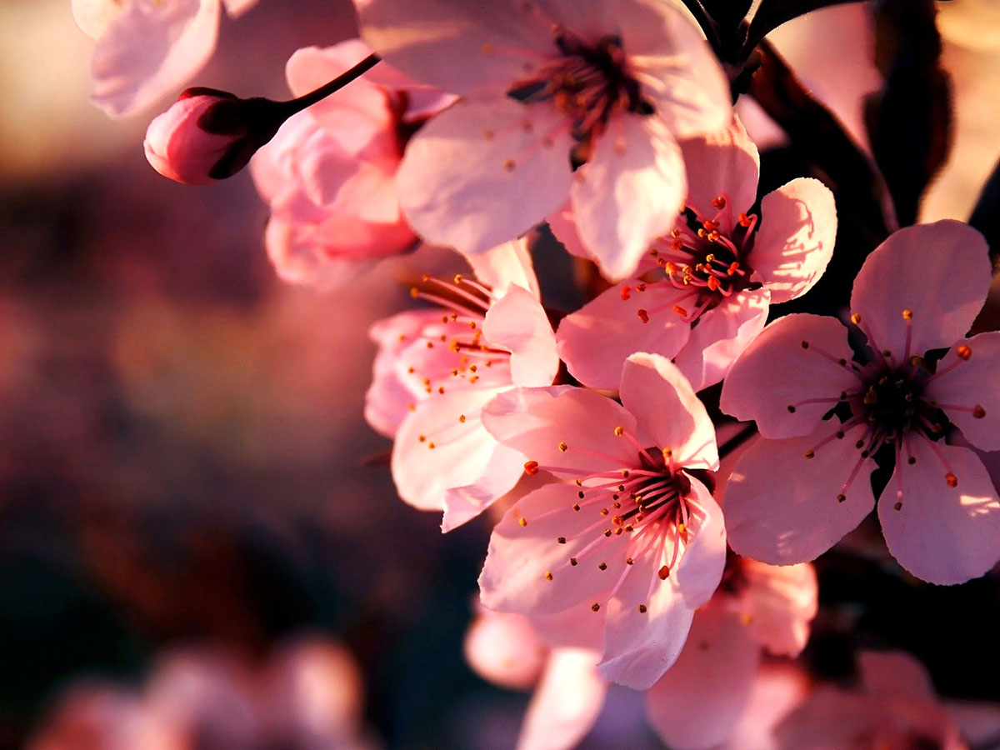

Цветок
Цвето́к (множ. цветки́, лат. flos, -oris, др.-греч. ἄνθος, -ου) — сложная система органов семенного размножения цветковых (покрытосеменных) растений.

Цветок представляет собой видоизменённый, укороченный и ограниченный в росте спороносный побег, приспособленный для образования спор и гамет, а также для проведения полового процесса, завершающегося образованием плода с семенами. Исключительная роль цветка как особой морфологической структуры связана с тем, что в нём полностью совмещены все процессы бесполого и полового размножения. От шишки голосеменных растений цветок отличается тем, что у него в результате опыления пыльца попадает на рыльце пестика, а не на семязачаток непосредственно, а при последующем половом процессе семязачатки у цветковых развиваются в семена внутри завязи.
Цветок, будучи уникальным образованием по своей природе и функциям, поразительно разнообразен по деталям строения, окраске и размерам. Самые мелкие цветки растений семейства Рясковые имеют в диаметре всего около 1 мм, в то же время как самый крупный цветок у раффлезии Арнольда (Rafflesia arnoldii) семейства Раффлезиевые, обитающей в тропических лесах на острове Суматра, достигает в диаметре 91 см и имеет массу около 11 кг.
Цветки бывают одиночными, но чаще группируются в соцветия.
10 самых красивых цветов
Цветы – самый красивый и простой способ передать свои эмоции и чувства. С этим согласятся многие. Ароматные и прекрасные – они способны поднять настроение буквально каждому, даже если букет дарят мужчине. Цветы способны вызвать ощущение счастья, снять стресс, даже уменьшить боль и помочь справиться с гневом.

Особенно эффективно такое необычное лекарство, если в ход идут самые красивые цветы в мире. И вот самые лучшие препараты:
10. Дендробиум
Это растение получило свое необычное название благодаря греческим словам био и дендро – что переводится как жизнь и дерево. Но на самом деле дендробиум переводится на русский, как «живущий на дереве». Кстати, все виды одного из самых красивых цветков на свете принадлежат к семейству орхидных.
Следовательно, находятся по охраной. И это в соответствии с международной конвенцией о запрете торговли дикими растениями и животными. Поэтому сейчас в мире, и в России в частности, дендробиум можно встретить разве что в декоративных садах. Впрочем, многие цветоводы разводят его в домашних условиях в обычных горшках.
9. Лантана
Этот цветок представляет из себя вечнозеленый кустарник. И распространен он широко в Венесуэле и Колумбии. Можно встретить лантану и в некоторых других странах Южной и Центральной Америки. Удивительно, но, несмотря на необычную красоту растения, многие считают его обычным сорняком.
8. Гиацинт
Свое красивое название гиацинт получил в память о греческом юноше по имени Гиацинт. Он был возлюбленным знаменитого бога Аполлона (кстати, такие чувства у древних греков была в порядке вещей и не считались чем-либо ненормальным).

Одновременно был неравнодушен к красавцу и другой бог – это бог ветра Зефир. Гиацинт к нему был холоден, поэтому Зефир на него злился и в один момент направил в голову возлюбленного диск, который запустил Аполлон. Из крови Гиацинта внезапно вырос цветок невообразимой красоты. И это случилось благодаря Аполлону.
7. Дицентра великолепная
Этот знаменитый цветок известен под названием "Разбитое сердце". Но в Германии, например, дицентру великолепную называют "цветок сердца", во Франции - "Сердечко Жанетты", а в Польше – "Туфелька Божьей Матери".
Ну а абсолютно все англоязычное население наше планеты называет этот красивейший цветок почти так же как и мы – "Кровоточащее сердце" – по-английски Bleeding heart. В каждой стране мира существует своя легенда, которая объясняет столь романтическое название цветочка.
6. Рудбекия
Этот шикарный цветок в разных странах именую по-разному. В Северной Америке, на родине, растение называется "Черноглазая Сюзанна", в Украине – "Воловий глаз", в Германии – "Солнечная шляпа". Однако официальное название цветку досталось от Карла Линнея. Он назвал рудбекию в честь своего друга и учителя, ботаников из Швеции отца Улофа Рудбека старшего и сына Улофа Рудбека младшего.

Красивейшее растение может быть разных видов. Популярны у садоводов – Рудбекия Хирта и Рудбекия Волосистая. Яркие и крупные цветы непременно создадут в саду ощущение праздника, причем надолго. Растение отличается довольно продолжительным цветением, и непрерывно радует глаз практически полгода. Кстати, с каждой неделей цветение все усиливается. Другими словами, чем ближе зима, тем больше цветков.
5. Калла
Калла иначе именуется Белокрыльником. Чаще всего в России его можно встретить в вазонах или же в свадебных букетах. Ну а естественная среда обитания каллы – это болотистая местность и берега водоемов. И кто бы мог подумать, что в таких труднодоступных топях можно встретить такую красоту?

Цветок каллы называют необычным благодаря уникальности формы. К самым красивым цветкам в мире его относят и потому, что растение имеет множество оттенков. Кроме белых, в природе можно встретить фиолетовые, розовые, оранжевые, зеленые, оранжевые и желтые.
4. Гортензия
Этот красивый цветок в дополнительных описаниях не нуждается. Вся его прелесть, как говорится, налицо. Название растение получило в честь принцессы Гортензии. Это сестра принца Римской империи по имени Карл-Генрих Нассау-Зиген. Гортензия сейчас является едва ли не самым любимым цветком садоводов. В мире насчитывается примерно 600 сортов красивого цветка.
3. Стрелиция
Растение с экзотическимчаще называют "Райской птичкой". Такое прозвище ему дали из-за характерной формы лепестков цветочка. Они очень похожи на оперение тропических птиц. Встретить такое растение в дикой природе можно, разве что, в Южной Африке. В России стрецилия водится в виде комнатных растений или экзотов в срезанном виде.
2. Канна
Канна – единственный представитель семейства Канновых. Всего же насчитывается примерно 50 видов цветка, которые отличаются друг друга цветовой гаммой. В основном канна растет в Южной и Центральной Америке, однако в Европе растение уже становится одним из самых популярных садовых цветов. Это большой цветок с эффектными пурпурными или сизо-зелеными листьями, а также крупными цветками на высоких стеблях.

Канна – единственный представитель семейства Канновых. Всего же насчитывается примерно 50 видов цветка, которые отличаются друг друга цветовой гаммой. В основном канна растет в Южной и Центральной Америке, однако в Европе растение уже становится одним из самых популярных садовых цветов. Это большой цветок с эффектными пурпурными или сизо-зелеными листьями, а также крупными цветками на высоких стеблях.
1. Сакура
Ну и самый красивый цветок в мире, без сомнения, сакура. И это любимый цветок японцев, поскольку он является официальным символом страны. Праздник цветения сакуры в Японии устраивают каждый год. Начинается он приблизительно 27 марта.
Точная дата торжеств все-таки зависит от времени начала расцвета и может сдвигаться в любую сторону. Удивительно, но в дни празднования японцы не ходят на работу, им предоставлено время, чтобы с удовольствием и спокойно налюбоваться хрупкой и недолговечной красотой.